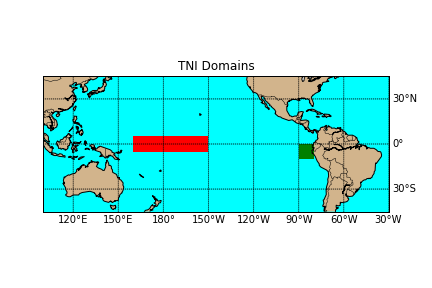
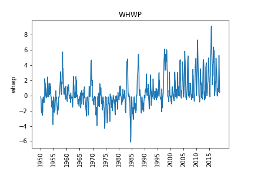

The Atlantic Meridional Model Sea Surface Temperature Index describes the meridional variability in the Tropical Atlantic Ocean. This analysis is performed over the region from 21° South to 32° North and 74° West to 15° East using Sea Surface Temperatures. More info can be found here.
The Atlantic Meridional Model Surface Wind Index describes the meridional variability in the Tropical Atlantic Ocean. This analysis is performed over the region from 21° South to 32° North and 74° West to 15° East using surface winds. More info can be found here.
The Atlantic Multi-decadal Oscillation is an index of North Atlantic Sea Surface Temperatures, computed for the entire ocean from 0° - 70° North. The units may be C° or no units. More info can be found here.
This is the monthly mean Sea Surface Temperature (SST) taken in the box from 0° - 10° South and 90° West - 80° West. This is one of several measurements that try to capture the El Nino-La Nina phenomena. The values are in Degree's Centigrade (C°).
This is the monthly mean Sea Surface Temperatures (SST) taken in the box from 5° South - 5° North and 150° West - 90° West. This is one of several measurements that try to capture the El Nino-La Nina phenomena. The values are in Degree's Centigrade (C).
This is the monthly mean Sea Surface Temperatures (SST) taken in the box from 5° South - 5° North and 160° East - 150° West. This is one of several measurements that try to capture the El Nino-La Nina phenomena. The values are in Degree's Centigrade (C).
The Oceanic Nino Index is a 3 month running mean of Sea Surface Temperature computed over the area 5° South - 5° North and 170° East - 120° West. This is one of several measurements that try to capture the El Nino-La Nina phenomena. The values are in Degree's Centigrade (C°). More info can be found here
The Pacific–North American tele-connection pattern (PNA) is a climatological term for a large-scale weather pattern with two modes, denoted positive and negative, and which relates the atmospheric circulation pattern over the North Pacific Ocean with the one over the North American continent. The index can be computed different ways, with one common way being to use 500mb geopotential heights, normalized by the climatological geopotential heights, from the four points shown on the map below ((20°N,160°W),(45°N,165°W),(55°N,115°W),(30°N,85°W)). The values have not units. More info can be found here and here
Tropical Southern Atlantic Index is the anomaly of the average of the monthly SST from 0° - 20° South and 10° East - 30° West. The values are in Degree's Centigrade (C°). More info can be found here
The Trans-Nino Index is the standardized Nino 1-2 minus the Niño 4 with a 5 month running mean applied which is then standardized using the 1950-1979 period. The values are in Degree's Centigrade (C°). More info can be found here

The Tropical Southern Atlantic Index is the anomaly of the average of the monthly SST from 0° - 20° South and 10° East - 30° West. The values are in Degree's Centigrade (C°). More info can be found here
The Quasi-Biennial Oscillation is a monthly mean of the Zonal Wind component taken at 30mb. It is computed as an area average taken along the equator for the entire globe. The units are likely meters per second.More info can be found here
The Western Hemisphere Warm Pool is a monthly anomaly of the ocean surface area warmer than 28.5°C in the Atlantic and eastern North Pacific, from roughly 12° South to 30° North and 115° West to 40° West. More info can be found here
